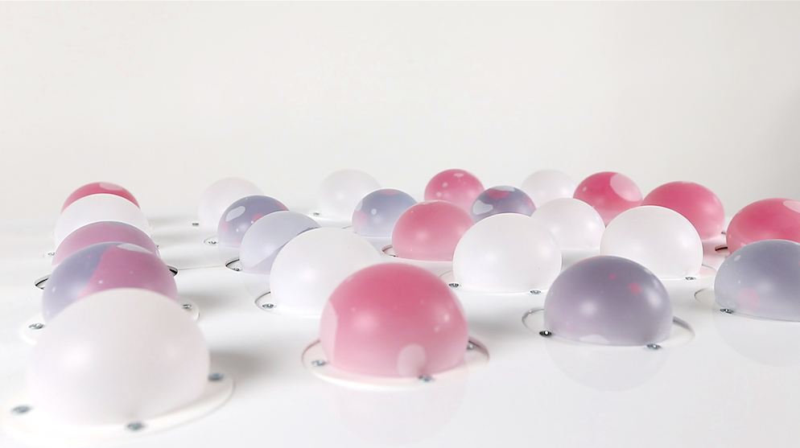

COLORISE
Material Fabrication, Programming, Mechanism, Fluid channel Design
In the physical environment, shape-changing displays and interfaces have attracted much attention as a means of enabling intuitive expression and interactions. In this research, we propose a new method for shape- and color-changing display called COLORISE. This system has inflatable shape changing pixels that can change their colors without using any light-emitting type devices. The array of the modules enables various color patterns (White, Red, or Purple), making full use of the characteristics of the material. Each pixel also has a touch sensing function that enables users to interact with it intuitively.
Credit
Co-auther: Takuya Matsunobu, Yasuaki Kakehi


